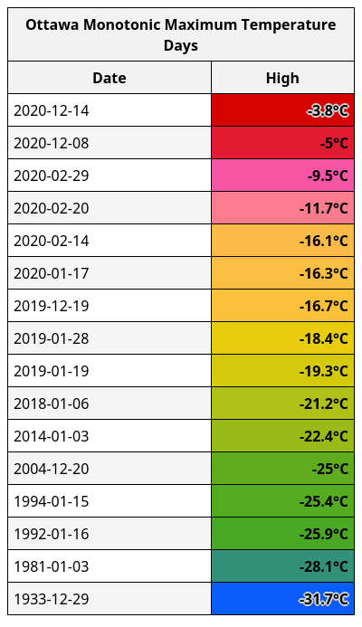

Weather Frequently Asked Questions
- How accurate are weather forecasts?
- What is a synoptic day and how come Environment Canada daily data does not start and end at midnight?
- What do you mean by "first frost"?
- What are the different types of frost?
- What do those "monotonic" tables mean?
- What is Cumulative Snow Depth and why is it measured in cm·days?
- How are hours of bright sunshine calculated?
How accurate are weather forecasts?
Three day forecasts are generally reliable. No forecast is perfect, but I would trust a 3 day forecast. Seven day forecasts are worth consulting if you have something planned. They are frequently wrong, but they are also frequently right. 14 day forecasts are mostly to give you general hints and guidelines. If rain is forecast 10 days from now, it could easily be off by a day or two, or miss entirely; but they are handy for looking at general trends like: Next week is going to be colder. I wouldn't trust it for planning an event on a specific day.
Beyond 14 days, I wouldn't even bother reading the forecasts unless you are bored.
What is a synoptic day and how come Environment Canada daily data does not start and end at midnight?
tl;dr: Environment Canada defines a day (also called a synoptic day) as starting at 0600 UTC and ending just before 0600 UTC the next day, regardless of the location across Canada.
Long answer:
This answer is more complicated than you might imagine. Most people would define a "day" (I mean the "What day is today" kind of day, as opposed to the "Day vs. night" kind of day) as starting at midnight and ending at 11:59:59pm. Unfortunately, due to daylight saving time, that leads to one day in spring being 23 hours long and one day in the fall being 25 hours long. This discrepancy might not seem like a big deal to most people, but it causes strange data anomalies for certain measurements like total rain or total snow (those days will have 4% more (or less) opportunity for rain/snow). So, to avoid that whole problem, they define each day as exactly 24 hours. Beyond that, they synchronize days from coast-to-coast across Canada. Each day (also called a synoptic day to disambiguate it) starts at 0600 UTC and ends at 0559 UTC regardless of location. That ends up being 3:30am in St. John's, NL (during the summer) and 10pm in Vancouver during the winter.
If the temperature gets abnormally warm at 11pm on December 12th in Vancouver, that might set the daily record for December 13th; and the opposite is true in Newfoundland. If it rains between 2am and 3am on August 2nd in St. John's, that rain will actually be recorded against August 1st in the weather archives of Environment Canada.
What do you mean by "first frost"?
Short answer: It's the first time the air temperature hits 0.0°C at the airport (or wherever your local weather station is).
"But, I saw some frost on my roof/car/lawn before you announced the first frost."
Long answer:
Environment Canada defines it as the first time that the air temperature is equal to or below 0.0°C. Now, a lot of people think of "frost" as a thin layer of ice that can show up on their car or roof, but that can (surprisingly) happen when the air temperature is well above 0°C. Depending on the clouds in the sky, the wind, and the colour of the surface, you can get visible frost deposits at temperatures as high as +3°C pretty easily. This is called Radiative Cooling and the darker the surface, the more this will happen. Now, when most people talk frost, it's a gardening term. Frost is notable because plants freeze and die. Plants are rarely black and are often partly blocked by other plants, which limits their potential for radiative cooling. To get a frost that affects a garden, you typically need to get an air temperature at or below 0.0°C, which is what Environment Canada tracks.
What are the different types of frost?
There are 3 generally accepted types of frost:
- Soft frost. This occurs when the air temperature stays above zero, but some surfaces drop below zero due to Radiative Cooling. If the relative humidity is close to 100% at the time, then a visible layer of ice (frost) may show up on some surfaces. Some plants may be damaged or killed by this type of soft frost.
- Official frost. This occurs when the air temperature hits 0.0°C. Just like a soft frost, if the relative humidity is close to 100%, you may see a visible layer of frost on some surfaces. If the air is dry, you may not see anything. Many plants may be damaged or killed by this type of frost.
- Hard frost (a.k.a. killing frost). This occurs when the surface of the ground reaches 0.0°C. This often requires an air temperature of -3°C or below (but can happen with prolonged exposure to anything below 0.0°C, or if the wind is strong enough). Most plants that die in the winter will be killed by the first hard frost.
What do those "monotonic" tables mean?
It's probably best to think of this as a "most since" or "least since" table. Let's look at one specific table for example:

This is a list of "Ottawa Monotonic Maximum Temperature Days". Let's break down what that title means:
- The first word is easy, it's for the city of Ottawa.
- It ends with "Maximum Temperature Days" so each entry in the second column is the maximum temperature observed on the day listed in the first column.
- And now the complicated part "Monotonic". While the most common definition of monotonic is "speaking or uttered with an unchanging pitch or tone.", that is not the only definition. There is a second, mathematical definition: "(of a function or quantity) varying in such a way that it either never decreases or never increases.". That is the definition that I'm using here. In this case, each day listed has a maximum temperature that is lower-than-or-equal-to the day listed above, and days are listed in reverse chronological order. Days that are not lower-than-or-equal-to the day above are skipped entirely.
- Dec 14 is the first day and is thus always included.
- Dec 13, 12, 11, 10 and 9th are skipped because their daytime high was greater than -3.8°C.
- Dec 8 is included because its high temperature was ≤ (less-than-or-equal-to) -3.8°C.
- After that, almost 10 months are skipped because none of their daytime high temperatures are ≤ -5°C.
- Feb 29, 2020 is included because its daytime high is ≤ -5°C.
- This continues until you get all the way down to Dec 29, 1933; which is the coldest day in Ottawa history and thus no other days are listed.
This chart is useful for answering questions like: When was the last time Ottawa had a day that stayed below -25°C? You simply look down the list until you find the first row with a value < -25°C, which happens to be Jan 15, 1994.
What is Cumulative Snow Depth and why is it measured in cm·days?
You add up the snow depth from each day. 5 days with 15cm of snow depth = 15cm + 15cm + 15cm + 15cm + 15cm = 75cm·days. It is similar to average snow depth. With average snow depth, you add up all of the depth values and then divide by the number of days, and that works great if most of the days have measurable snow, but imagine a month when 1 day had 10cm and the rest had zero cm. Your average would end up being 0.3cm; but it doesn't make much sense because 97% of the days had literally no snow. Using a cumulative snow depth of "10cm" makes more sense.
When you calculate for a whole "winter", average becomes much more tricky. How many days do you divide by at the end? If you use astronomical winter (Dec 21st - Mar 21st), then you will miss all the snow that falls before Dec 21st and after Mar 21st (which in many Canadian cities can be a lot). That whole problem goes away when you use cumulative snow depth, you just add up every day that had snow depth. If there was snow on the ground on Sept 12th, then you include that day. No problem.
How are hours of bright sunshine calculated?
I use the hourly "current conditions" to estimate bright sunshine.
If the "current conditions" are one of:
'a few clouds',
'clear',
'haze',
'mainly clear',
'mainly sunny',
'mostly sunny',
'partly cloudy',
'sunny',Then I declare it "bright sunshine". Otherwise it is not.
This is not the same as how Environment Canada used to calculate hours of bright sunshine. They used to use a Campbell–Stokes recorder, which is much better than my method. Environment Canada discontinued that method of measurement many years ago, so I estimate it. My estimations are not equivalent. They produce numbers consistently lower than a Campbell–Stokes recorder, but they are self-consistent and that's really all that matters with this type of comparison.